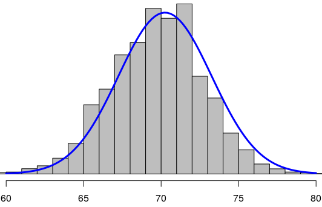
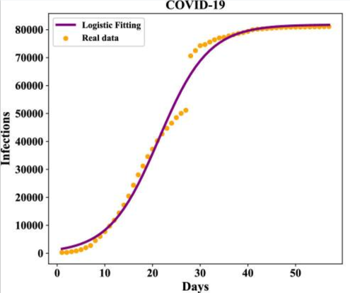
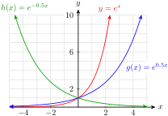
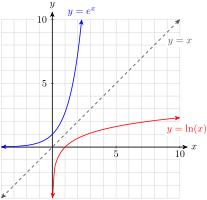

We have looked at logarithms with various bases, and in particular we studied the common or base 10 logarithms, which often appear in applications. There is another base for logarithms and exponential functions that is used in scientific applications. \(~\alert{\text{[TK]}}~~\) This base is an irrational number called \(e\text{,}\) where
The number \(e\) is essential for many advanced topics, and it is often called the natural base. It may seem strange to use an irrational number as the base for exponential functions, but just as the irrational number \(\pi\) arises naturally in geometry, so does \(e\) arise in calculus and its applications. At the end of this section we’ll look at a specific case of how base \(e\) occurs, and how its use is connected to the ideas and techniques of calculus.
Subsection10.3.1The Natural Exponential Function
The natural exponential function is the function
\begin{equation*}
f(x) = e^x
\end{equation*}
Values for \(e^x\) can be obtained with a calculator using the \(\boxed{e^x}\) key (2ndLN on most calculators). For example, you can evaluate \(e^1\) by pressing
\(\qquad\qquad\)2ndLN\(1\)
to confirm the value of \(e\) given above. (We’ll explain why we use the 2ndLN key a little later.)
Try a few more calculations to become familiar with base \(e\text{.}\)
Checkpoint10.3.1.Practice 1.
Use your calculator to evaluate the following powers.
\(e^2\approx\)
\(e^{3.5}\approx\)
\(e^{-0.5}\approx\)
Answer1.
\(e^{2}\)
Answer2.
\(e^{3.5}\)
Answer3.
\(e^{-0.5}\)
Solution.
\(\displaystyle e^2\approx 7.389\)
\(\displaystyle e^{3.5}\approx 33.115\)
\(\displaystyle e^{-0.5}\approx 0.6065\)
What about the graph of this new exponential function? Because \(e\) is a number between 2 and 3, the graph of \(f(x) = e^x\) lies between the graphs of \(y = 2^x\) and \(y = 3^x\text{.}\) Compare the table of values and the graphs of the three functions below. For example, note that for \(x=2\text{,}\) the value of \(e^2 = 7.389\) is between \(2^2 = 4\) and \(3^2 = 9\text{.}\) You can verify the table and the graphs on your calculator.
\(x\)
\(y=2^x\)
\(y=e^x\)
\(y=3^x\)
\(-3\)
\(0.125\)
\(0.050\)
\(0.037\)
\(-2\)
\(0.250\)
\(0.135\)
\(0.111\)
\(-1\)
\(0.500\)
\(0.368\)
\(0.333\)
\(0\)
\(1\)
\(1\)
\(1\)
\(1\)
\(2\)
\(2.718\)
\(3\)
\(2\)
\(4\)
\(7.389\)
\(9\)
\(3\)
\(8\)
\(20.086\)
\(27\)
Checkpoint10.3.2.QuickCheck 1.
The value of \(e^2\) is closest to
\(\displaystyle 3\)
\(\displaystyle 5\)
\(\displaystyle 7\)
\(\displaystyle 9\)
Answer.
\(\text{Choice 3}\)
Solution.
7
Variations on the natural exponential function occur in many disciplines. For example, the graph in the figure below is called a "bell curve." It is the graph of the normal distribution in statistics.

Example10.3.3.
The normal distribution above shows the heights of men in the US. \(\alert{\text{[TK]}}~~\) The average or mean height for men is 70 inches, and the formula for the graph is
This next graph is an example of a logistic function, which models population growth with an upper bound.

To use the natural base for exponential growth and decay, we will need to look at functions of the form \(~y=e^{kx}~\) for various values of \(k\text{.}\) Here are some examples.
Example10.3.4.
Use technology to graph each function. How does the coefficient of \(x\) make each graph different from the graph of \(y = e^x\text{?}\)
\(\displaystyle g(x) = e^{0.5x}\)
\(\displaystyle h(x) = e^{-0.5x}\)
Solution.

The graph of \(y = e^x\) is shown in red. For positive \(x\text{,}\) the coefficient \(0.5\) makes the graph of \(g\) grow more slowly than \(y = e^x\text{,}\) because \(e^{0.5x}\) is smaller than \(e^x\text{.}\) So for positive \(x\) the graph of \(g\) lies below the graph of \(y = e^x\text{.}\)
Because \(e^{-0.5x} = \dfrac{1}{e^{0.5x}}\text{,}\) the graph of \(h\) is decreasing, and in fact it is the reflection of the graph of \(g\) about the \(y\)-axis.
Subsection10.3.2The Natural Logarithmic Function
Recall that each exponential function with base \(b\) has an inverse function, the logarithmic function with the same base. For example, the function \(~y=\log_2{(x)}~\) is the inverse of the function \(~y=2^x\text{.}\) It gives the exponent needed on 2 to give \(x\text{,}\) so that, for instance, \(~\log_2{(16)} = 4~\text{,}\) because \(~2^4 = 16\text{.}\)\(\alert{\text{[TK]}}~~\)
The base \(e\) logarithm of a number \(x\text{,}\) or \(\log_ e {(x)}\text{,}\) is called the natural logarithm of \(x\) and is denoted by \(\ln {(x)}\text{.}\) (Why “ln” and not “nl”? The natural logarithm is denoted by “ln” because it stands for “logarithmus naturalis,” which is the Latin for “natural logarithm.”) Here is its official definition.
The Natural Logarithm.
The natural logarithm is the logarithm base \(e\text{.}\)
The natural logarithm of \(x\) is the exponent to which \(e\) must be raised to produce \(x\text{.}\) For example, the natural logarithm of \(10\text{,}\) or \(\ln {(10)}\text{,}\) is the solution of the equation
As is the case with exponential and log functions with other bases, the natural log function, \(y= \ln {(x)}\text{,}\) and the natural exponential function, \(f(x) = e^x\text{,}\) “undo” each other, so they are inverse functions. (This is why many calculators use 2ndLN to indicate \(e^x\text{.}\))
Checkpoint10.3.5.Practice 3.
Use your calculator to evaluate each logarithm. Round your answers to four decimal places.
\(\ln 100\approx\)
\(\ln 0.01\approx\)
\(\ln e^3\approx\)
Answer1.
\(\ln\!\left(100\right)\)
Answer2.
\(\ln\!\left(0.01\right)\)
Answer3.
\(\ln\!\left(e^{3}\right)\)
Solution.
\(\displaystyle \ln 100\approx 4.6052\)
\(\displaystyle \ln 0.01\approx -4.6052\)
\(\displaystyle \ln e^3 =3\)
As usual, we can gain a better understanding of a new function by looking at its graph.
Example10.3.6.
Graph \(~f(x) = e^x~\) and \(~g(x) = \ln {(x)}~\) on the same grid.
Solution.
Earlier we made a table of values to graph the fuction \(f(x) = e^x\text{,}\) and we can make a table of values for \(g(x) = \ln {(x)}\) by interchanging the columns in that table. Plotting the points gives us the graph below.
\(x\)
\(y=\ln {(x)}\)
\(0.050\)
\(-3\)
\(0.135\)
\(-2\)
\(0.368\)
\(-1\)
\(1\)
\(0\)
\(2.718\)
\(1\)
\(7.389\)
\(2\)
\(20.086\)
\(3\)

You can see that the graph of \(g(x) = \ln {(x)}\) is the reflection of the graph of \(f(x) = e^x\) about the line \(y=x\text{.}\) In particular, notice that while the graph of \(f(x) = e^x\) has no points with negative \(y\)-values, the graph of \(g(x) = \ln {(x)}\) has no points with negative \(x\)-values.
From the graph of \(g(x) = \ln {(x)}\) you can make the following observations. \(~\alert{\text{[TK]}}~~\)
The natural log function has only positive numbers as input values.
The natural logs of negative numbers and zero are undefined.
The natural log of a number greater than 1 is positive, while the logs of numbers between 0 and 1 are negative.
Subsection10.3.3Properties of the Natural Logarithm
In general, natural logs obey the same conversion equations that work for logs to other bases. In fact, all the techniques you have already learned for working with exponential and log functions still work for base \(e\text{.}\)
Conversion Equations for Natural Logs.
\begin{equation*}
\blert{y= \ln {(x)}~~~~~~\text{if and only if}~~~~~~e^y=x}
\end{equation*}
Checkpoint10.3.7.QuickCheck 2.
Which of the following is equivalent to \(e^x=k\) ?
\(\displaystyle e^k=x\)
\(\displaystyle \ln e=x\)
\(\displaystyle \ln k=x\)
\(\displaystyle k^x=e\)
Answer.
\(\text{Choice 3}\)
Solution.
\(\ln k=x\)
In particular,
\begin{align*}
\ln {(e)} \amp = 1~~~~ \text{ because }~~~~ e^1 = e \\
\ln {(1)} \amp = 0~~~~ \text{ because }~~~~ e^0 = 1
\end{align*}
The three properties of logarithms you learned in Section 7.4 also apply to base \(e\) logarithms.
Then \(e^{2 \ln{(x+3)}} = e^{\ln{((x+3)^2)}} = (x + 3)^2\text{.}\)
Checkpoint10.3.9.Practice 4.
Simplify each expression. Use “sqrt(x)” to get \(\sqrt{x}\text{.}\)
\(e^{(\ln x)/2}=\)
\(\ln\left(\dfrac{1}{e^{4x}}\right)=\)
Answer1.
\(\sqrt{x}\)
Answer2.
\(-4x\)
Solution.
\(\displaystyle \sqrt{x}\)
\(\displaystyle -4x\)
Subsection10.3.4Solving Equations
We use the natural logarithm to solve exponential equations with base \(e\text{.}\) The techniques we’ve learned for solving other exponential equations also apply to equations with base \(e\text{.}\)\(~\alert{\text{[TK]}}\)
Example10.3.10.
Solve each equation for \(x\text{.}\)
\(\displaystyle e^x = 0.24\)
\(\displaystyle \ln {(x)} = 3.5\)
Solution.
We convert the equation to logarithmic form and evaluate using a calculator.
\begin{equation*}
x = \ln {(0.24)} \approx -1.427
\end{equation*}
We convert the equation to exponential form and evaluate.
\begin{equation*}
x = e^{3.5} \approx 33.1155
\end{equation*}
Checkpoint10.3.11.Practice 5.
Solve each equation. Round your answers to four decimal places.
\(\ln x =-0.2\)
\(x\approx\)
\(e^x = 8\)
\(x\approx\)
Answer1.
\(e^{-0.2}\)
Answer2.
\(\ln\!\left(8\right)\)
Solution.
\(\displaystyle 0.8187\)
\(\displaystyle 2.0794\)
Checkpoint10.3.12.QuickCheck 3.
Why is the equation \(e^x=6.5\) easier to solve than \(8^x=6.5\) ?
8 is larger than 6.5.
\(k\) is a constant.
There is a button for log base \(e\) on the calculator, but not a button for log base 8.
Because \(e\) is an irrational number.
Answer.
\(\text{Choice 3}\)
Solution.
There is a button for log base on the calculator, but not a button for log base 8.
To solve more complicated exponential equations, we isolate the power on one side of the equation before converting to logarithmic form.
Example10.3.13.
Solve \(~200 = 60 + 20 e^{0.4x}\)
Solution.
First, we isolate the power.
\begin{align*}
200 \amp = 60 + 20 e^{0.4x} \amp \amp \blert{\text{Subtract 60 from both sides.}}\\
140 \amp = 20 e^{0.4x} \amp \amp \blert{\text{Divide both sides by 20.}}\\
7 \amp = e^{0.4x}
\end{align*}
Then we convert the equation to logarithmic form.
\begin{align*}
0.4x \amp = \ln {(7)} \amp\amp \blert{\text{Divide both sides by 0.4.}}\\
x \amp= \frac{\ln {(7)}}{0.4}
\end{align*}
Rounded to four decimal places, \(x \approx 4.8648\text{.}\)
Note10.3.14.
When solving the equation \(7 = e^{0.4x}\) in the Example above, we can think of taking the natural logarithm of both sides. This gives us
\begin{align*}
\ln {(7)} \amp = \ln {(e^{0.4x})}\amp\amp \blert{\text{Simplify the right side.}}\\
\ln {(7)} \amp = 0.4x
\end{align*}
because \(\ln{(e^a)} = a\) for any number \(a\text{.}\) We then proceed with the solution as before.
\begin{equation*}
P = \dfrac{20}{1 + 5e^{-0.4t}}
\end{equation*}
has its upper bound at \(~P=20\text{.}\) Find the value of \(t\) for which \(~P=10\text{.}\)
Solution.
We must solve the equation \(~10 = \dfrac{20}{1 + 5e^{-0.4t}}~\) for \(t\text{.}\) To begin, we multiply both sides of the equation by the denominator, \(1 + 5e^{-0.4t}\text{,}\) to get
Sometimes exponential growth is given as a percentage, so for example we might say “prices rose by 5% annually.” In this case the growth factor is \(~b=1+r~\text{,}\) where \(r\) is the percentage rate in decimal form. For a percent decrease, \(~b=1-r~\text{.}\)\(\alert{\text{[TK]}}~~\)
Example10.3.18.
From 1990 to 2000, the population of Clark County, Nevada, grew by \(6.4\%\) per year. \(~\alert{\text{[TK]}}~~\)
What was the growth factor for the population of Clark County from 1990 to 2000? If the population of Clark County was 768,000 in 1990, write a formula for the population \(t\) years later.
Write a growth formula for Clark County using base \(e\text{.}\)
Solution.
The growth factor was \(b = 1 + r = 1.064\text{.}\) The population \(t\) years later was
We use the formula \(P(t) = P_0 \cdot e^{kt}\text{,}\) where \(e^k = 1.064\text{.}\) Solving for \(k\text{,}\) we find
\begin{equation*}
k = \ln {(1.064)} = 0.062
\end{equation*}
so \(P(t) = 768,000 e^{0.062t}\text{.}\)
Checkpoint10.3.19.Practice 8.
From 1994 to 1998, the number of personal computers connected to the Internet grew according to the formula \(N(t) = 2.8e^{0.85t}\text{,}\) where \(t = 0\) in 1994 and \(N\) is in millions. (Source: Los Angeles Times, September 6, 1999)
Evaluate \(N(1)=\) . By what percent did the number of Internet users grow in one year?
About %
Express the growth law in the form \(N(t) = N_0 (1 + r)^t\text{.}\)
\(N(t)=\)
Hint.
\(e^k = 1 + r\)
Answer1.
\(2.8e^{0.85}\)
Answer2.
\(\left(e^{0.85}-1\right)\cdot 100\)
Answer3.
\(2.8\cdot 2.33965^{t}\)
Solution.
\(N(1)\approx 6.55\text{,}\)\(~134\%\)
\(\displaystyle N(t)\approx 2.8 (2.3396)^t\)
Now, what about exponential decay, where the the decay fator \(b\) is a number less than 1? If \(k\) is negative, then \(e^k\) is a number less than 1. For example, if \(k = -2\text{,}\)
describes exponential growth if \(k \gt 0\text{,}\) and exponential decay if \(k \lt 0\text{.}\)
Checkpoint10.3.20.QuickCheck 4.
The natural log of a number between 0 and 1 is
positive.
negative.
undefined.
between \(e^0\) and \(e^1\text{.}\)
Answer.
\(\text{Choice 2}\)
Solution.
negative.
Example10.3.21.
Express the decay law \(~N(t) = 60 (0.8)^t~\) in the form \(~N(t) = N_0 e^{kt}\text{.}\)
Solution.
For this decay law, \(N_0 = 60\) and \(b = 0.8\text{.}\) We would like to find a value for \(k\) so that \(e^k = b = 0.8\text{,}\) that is, we must solve the equation
In Section 7.5.4 we looked at a formula for savings accounts on which the interest is compounded \(n\) times per year, and we saw that the amount \(A(t)\) on such an account increased when \(n\) increased. But there is a limit or upper bound to the amount, no matter how large the value of \(n\text{.}\) At this upper bound we say that the interest is compounded continuously, and the amount is given by the function
\begin{equation*}
A(t) = Pe^{rt}
\end{equation*}
where \(P\) is the principal invested and \(r\) is the interest rate. \(~\alert{\text{[TK]}}\)
Example10.3.23.
Suppose you invest $500 in an account that pays 8% interest compounded continuously. You leave the money in the account without making any additional deposits or withdrawals.
Write a formula that gives the value of your account \(A(t)\) after \(t\) years.
Make a table of values showing \(A(t)\) for the first 5 years.
Graph the function \(A(t)\text{.}\)
How much will the account be worth after 10 years?
How long will it be before the account is worth $1000?
Solution.
We substitute 500 for \(P\text{,}\) and 0.08 for \(r\) to find
The account will be worth $1112.77 after 10 years.
We substitute 1000 for \(A(t)\) and solve the equation.
\begin{align*}
1000 \amp= 500 e^{0.08t}\amp\amp \blert{\text{Divide both sides by 500.}}\\
2 \amp = e^{0.08t}\amp\amp \blert{\text{Take natural log of both sides.}}\\
\ln {(2)} \amp= \ln {(e^{0.08t})} = 0.08t\amp\amp \blert{\text{Divide both sides by 0.08.}}\\
t \amp= \frac{\ln {(2)}}{0.08}\approx 8.6643
\end{align*}
The account will be worth $1000 after approximately 8.7 years.
Checkpoint10.3.24.Practice 10.
Zelda invested $1000 in an account that pays 4.5% interest compounded continuously. How long will it be before the account is worth $2000?
Answer: about years.
Answer.
\(\frac{\ln\!\left(2\right)}{0.045}\)
Solution.
About 15.4 years
In the next Investigation we’ll see how the formula for interest compounded continuously, \(~A(t) = Pe^{rt}~\text{,}\) arises when \(n\text{,}\) the number of compounding periods, increases.
We learned in Section 7.5.4 that the amount, \(A\) (principal plus interest), accumulated in an account with interest compounded \(n\) times annually is
where \(P\) is the principal invested, \(r\) is the interest rate, and \(t\) is the time period, in years.
Suppose you keep \(\$1000\) in an account that pays 8% interest. How much is the amount \(A\) after 1 year if the interest is compounded twice a year? Four times a year?
\begin{gather*}
n = \alert{2}: A = 1000\left(1 + \frac{0.08}{\alert{2}} \right)^{\alert{2}(1)}= \\
n = \alert{4}: A = 1000\left(1 + \frac{0.08}{\alert{4}} \right)^{\alert{4}(1)}=
\end{gather*}
What happens to \(A\) as we increase \(n\text{,}\) the number of compounding periods per year? Fill in the table showing the amount in the account for different values of \(n\text{.}\)
\(n\)
\(~~~A~~~\)
\(1\) (annually)
\(1080\)
\(2\) (semiannually)
\(\)
\(4\) (quarterly)
\(\)
\(6\) (bimonthly)
\(\)
\(12\) (monthly)
\(\)
\(365\) (daily)
\(\)
\(1000\)
\(\)
\(10,000\)
\(\)
Plot the values in the table from \(n = 1\) to \(n = 12\text{,}\) and connect them with a smooth curve. Describe the curve: What is happening to the value of \(A\text{?}\)
In part (2), as you increased the value of \(n\text{,}\) the other parameters in the formula stayed the same. In other words, \(A\) is a function of \(n\text{,}\) given by \(A = 1000 \left(1 + \dfrac{0.08}{n} \right)^n\text{.}\) Use your calculator to graph A on successively larger intervals:
Use the Trace feature or the Table feature to evaluate \(A\) for very large values of \(n\text{.}\) Rounded to the nearest penny, what is the largest value of \(A\) that you can find?
As \(n\) increases, the values of \(A\) approach a limiting value. Although \(A\) continues to increase, it does so by smaller and smaller increments and will never exceed $1083.29. When the number of compounding periods increases without bound, we call the limiting result continuous compounding.
Is there an easier way to compute \(A\) under continues compounding? Yes! Compute \(1000e^{0.08}\) on your calculator. (Press 2ndLN to enter \(e^x\text{.}\)) Compare the value to your answer in part (5) for the limiting value.
Repeat your calculations for two other interest rates, 15% and (an extremely unrealistic) 100%, again for an investment of $1000 for 1 year. In each case, compare the limiting value of \(A\text{,}\) and compare to the value of \(1000e^r\text{.}\)
\(r=0.15\)
\(n\)
\(A\)
\(1\)
\(115\)
\(2\)
\(\hphantom{00000}\)
\(4\)
\(\)
\(6\)
\(\)
\(12\)
\(\)
\(3652\)
\(\)
\(1000\)
\(\)
\(10,000\)
\(\)
\(~~1000e^{0.15}= \)
\(r=1\)
\(n\)
\(A\)
\(1\)
\(200\)
\(2\)
\(\hphantom{00000}\)
\(4\)
\(\)
\(6\)
\(\)
\(12\)
\(\)
\(3652\)
\(\)
\(1000\)
\(\)
\(10,000\)
\(\)
\(~~1000e^{1}= \)
In part (8b), you have computed an approximation for \(1000e\text{.}\) What is the value of \(e\text{,}\) rounded to 5 decimal places?
Complete the table of values. What does \(\left(1 + \dfrac{1}{n} \right)^n\) appear to approach as \(n\) increases?
\(n\)
\(100\)
\(1000\)
\(10,000\)
\(100,000\)
\(\left(1+\dfrac{1}{n} \right)^n \)
In the Investigation, we saw that the number \(e\) arises as the limiting value of the expression \(\left(1 + \dfrac{1}{n} \right)^n\) as \(n\) increases without bound. The limiting process is one of the fundamental methods of calculus, and helps us understand and analyze other continuous phenomena, such as rates of growth.
Exercises10.3.7Homework 10.3
Skills Practice
Exercise Group.
For Problems 1-4, use your calculator to complete the table for each function. Then choose a suitable window and graph the function.
For Problems 7–10, solve for \(x\text{.}\) Round your answers to two decimal places.
7.
\(\displaystyle e^x=1.9\)
\(\displaystyle e^x=45\)
\(\displaystyle e^x=0.3\)
8.
\(\displaystyle e^x=2.1\)
\(\displaystyle e^x=60\)
\(\displaystyle e^x=0.9\)
9.
\(\displaystyle \ln {(x)} = 1.42\)
\(\displaystyle \ln {(x)} = 0.63\)
\(\displaystyle \ln {(x)} = -2.6\)
10.
\(\displaystyle \ln {(x)} = 2.03\)
\(\displaystyle \ln {(x)} = 0.59\)
\(\displaystyle \ln {(x)} = -3.4\)
Exercise Group.
For Problems 11-14, express each exponential function in the form \(P(t) = P_0b^t\text{.}\) Is the function increasing or decreasing? What is its initial value?
11.
\(P(t) = 20e^{0.4t}\)
12.
\(P(t)=0.8 e^{1.3t} \)
13.
\(P(t) = 6500e^{-2.5t}\)
14.
\(P(t)=1.7 e^{-0.02t} \)
15.
Fill in the table, rounding your answers to four decimal places.
\(x\)
\(0\)
\(0.5\)
\(1\)
\(1.5\)
\(2\)
\(2.5\)
\(e^x\)
\(\phantom{000} \)
\(\phantom{000}\)
\(\phantom{000}\)
\(\phantom{000}\)
\(\phantom{000}\)
\(\phantom{000}\)
Compute the ratio of each function value to the previous one. Explain the result.
16.
Fill in the table, rounding your answers to four decimal places.
\(x\)
\(0\)
\(2\)
\(4\)
\(6\)
\(8\)
\(10\)
\(e^x\)
\(\phantom{000} \)
\(\phantom{000}\)
\(\phantom{000}\)
\(\phantom{000}\)
\(\phantom{000}\)
\(\phantom{000}\)
Compute the ratio of each function value to the previous one. Explain the result.
17.
Fill in the table, rounding your answers to the nearest integer.
\(x\)
\(0\)
\(0.6931\)
\(1.3863\)
\(2.0794\)
\(2.7726\)
\(3.4657\)
\(4.1589\)
\(e^x\)
\(\phantom{000} \)
\(\phantom{000}\)
\(\phantom{000}\)
\(\phantom{000}\)
\(\phantom{000}\)
\(\phantom{000}\)
\(\phantom{000}\)
Subtract each \(x\)-value from the next one. Explain the result.
18.
Fill in the table, rounding your answers to the nearest integer.
\(x\)
\(0\)
\(1.0986\)
\(2.1972\)
\(3.2958\)
\(4.3944\)
\(5.4931\)
\(6.5917\)
\(e^x\)
\(\phantom{000} \)
\(\phantom{000}\)
\(\phantom{000}\)
\(\phantom{000}\)
\(\phantom{000}\)
\(\phantom{000}\)
\(\phantom{000}\)
Subtract each \(x\)-value from the next one. Explain the result.
Exercise Group.
For Problems 19–26, solve. Round your answers to two decimal places.
19.
\(6.21 = 2.3e^{1.2x}\)
20.
\(22.26 = 5.3e^{0.4x}\)
21.
\(6.4 = 20e^{0.3x} - 1.8 \)
22.
\(4.5 = 4e^{2.1x} + 3.3 \)
23.
\(46.52 = 3.1e^{1.2x} + 24.2 \)
24.
\(1.23 = 1.3e^{2.1x} - 17.1 \)
25.
\(16.24 = 0.7e^{-1.3x} - 21.7 \)
26.
\(55.68 = 0.6e^{-0.7x} + 23.1 \)
Exercise Group.
For Problems 27-32, solve the equation for the specified variable.
27.
\(y = e^{kt},~~\) for \(t\)
28.
\(\dfrac{T}{R} = e^{t/2},~~\) for \(t\)
29.
\(y = k(1-e^{-t}),~~\) for \(t\)
30.
\(B - 2 = (A + 3)e^{-t/3},~~\) for \(t\)
31.
\(T = T_0 \ln{(k + 10)},~~\) for \(k\)
32.
\(P = P_0 + \ln {(10k)},~~\) for \(k\)
33.
Fill in the table, rounding your answers to three decimal places.
\(n\)
\(0.39\)
\(3.9\)
\(39\)
\(390\)
\(\ln {(n)}\)
\(\hphantom{0000} \)
\(\hphantom{0000} \)
\(\hphantom{0000} \)
\(\hphantom{0000} \)
Subtract each natural logarithm in your table from the next one. (For example, compute \(\ln {(3.9)} - \ln {(0.39)}\text{.}\)) Explain the result.
34.
Fill in the table, rounding your answers to three decimal places.
\(n\)
\(0.64\)
\(6.4\)
\(64\)
\(640\)
\(\ln n\)
\(\hphantom{0000} \)
\(\hphantom{0000} \)
\(\hphantom{0000} \)
\(\hphantom{0000} \)
Subtract each natural logarithm in your table from the next one. (For example, compute \(\ln {(6.4)} - \ln {(0.64)}\text{.}\)) Explain the result.
35.
Fill in the table, rounding your answers to three decimal places.
\(n\)
\(2\)
\(4\)
\(8\)
\(16\)
\(\ln {(n)}\)
\(\hphantom{0000} \)
\(\hphantom{0000} \)
\(\hphantom{0000} \)
\(\hphantom{0000} \)
Divide each natural logarithm in your table by \(\ln 2\text{.}\) Explain the result.
36.
Fill in the table, rounding your answers to three decimal places.
\(n\)
\(5\)
\(25\)
\(125\)
\(625\)
\(\ln {(n)}\)
\(\hphantom{0000} \)
\(\hphantom{0000} \)
\(\hphantom{0000} \)
\(\hphantom{0000} \)
Divide each natural logarithm in your table by \(\ln {(5)}\text{.}\) Explain the result.
Exercise Group.
For Problems 37–42,
Express each growth or decay law in the form \(N(t) = N_0e^{kt}\text{.}\)
Check your answer by graphing both forms of the function on the same axes. Do they have the same graph?
37.
\(N(t) = 100\cdot 2^t\)
38.
\(N(t) = 50\cdot 3^t\)
39.
\(N(t) = 1200(0.6)^t\)
40.
\(N(t) = 300(0.8)^t\)
41.
\(N(t) = 10(1.15)^t\)
42.
\(N(t) = 1000(1.04)^t\)
Applications
43.
The number of bacteria in a culture grows according to the function
where \(N_0\) is the number of bacteria present at time \(t = 0\) and \(t\) is the time in hours.
Write a growth law for a sample in which 6000 bacteria were present initially.
Make a table of values for \(N(t)\) in 5-hour intervals over the first 30 hours.
Graph \(N(t) \text{.}\)
How many bacteria were present at \(t = 24\) hours?
How much time must elapse (to the nearest tenth of an hour) for the original 6000 bacteria to increase to 100,000?
44.
Hope invests $2000 in a savings account that pays \(5\frac{1}{2}\%\) annual interest compounded continuously.
Write a formula that gives the amount of money \(A(t)\) in Hope’s account after \(t\) years.
Make a table of values for \(A(t)\) in 2-year intervals over the first 10 years.
Graph \(A(t) \text{.}\)
How much will Hope’s account be worth after 7 years?
How long will it take for the account to grow to $5000?
45.
The intensity, \(I\) (in lumens), of a light beam after passing through \(t\) centimeters of a filter having an absorption coefficient of \(0.1\) is given by the function
What is the intensity (to the nearest tenth of a lumen) of a light beam that has passed through 0.6 centimeter of the filter?
How many centimeters (to the nearest tenth) of the filter will reduce the illumination to 800 lumens?
46.
X-rays can be absorbed by a lead plate so that
\begin{equation*}
I (t) = I_0 e^{-1.88t}
\end{equation*}
where \(I_0\) is the X-ray count at the source and \(I (t)\) is the X-ray count behind a lead plate of thickness \(t\) inches.
Graph \(I (t)\text{.}\)
What percent of an X-ray beam will penetrate a lead plate \(\frac{1}{2}\) inch thick?
How thick should the lead plate be in order to screen out 70% of the X-rays?
47.
The population of Citrus Valley was 20,000 in 2000. In 2010, it was 35,000.
What is \(P_0\) if \(t = 0\) in 2000?
Use the population in 2010 to find the growth factor \(e^k\text{.}\)
Write a growth law of the form \(P(t) = P_0 e^{kt}\) for the population of Citrus Valley.
If it continues at the same rate of growth, what will the population be in 2030?
48.
A copy of Time magazine cost $1.50 in 1981. In 1988, the cover price had increased to $2.00.
What is \(P_0\) if \(t = 0\) in 1981?
Use the price in 1988 to find the growth factor \(e^k\text{.}\)
Find a growth law of the form \(P(t) = P_0e^{kt}\) for the price of Time.
In 1999, a copy of Time cost $3.50. Did the price of the magazine continue to grow at the same rate from 1981 to 1999?
49.
Cobalt-60 is a radioactive isotope used in the treatment of cancer. A 500-milligram sample of cobalt-60 decays to 385 milligrams after 2 years.
Using \(P_0 = 500\text{,}\) find the decay factor \(e^k\) for cobalt-60.
Write a decay law \(N(t) = N_0e^{kt}\) for cobalt-60.
How much of the original sample will be left after 10 years?
50.
Weed seeds can survive for a number of years in the soil. An experiment on cultivated land found 155 million weed seeds per acre, and in the following years the experimenters prevented the seeds from coming to maturity and producing new weeds. Four years later, there were 13.6 million seeds per acre. (Source: Burton, 1998)
Find the annual decay factor \(e^k\) for the number of weed seeds in the soil.
Write an exponential formula with base \(e\) for the number of weed seeds that survived after \(t\) years.
Exercise Group.
Problems 51–58 are about doubling time and half-life.
51.
Delbert invests $500 in an account that pays 9.5% interest compounded continuously.
Write a formula for \(A(t)\) that gives the amount of money in Delbert’s account after \(t\) years.
How long will it take Delbert’s investment to double to $1000?
How long will it take Delbert’s money to double again, to $2000?
Graph \(A(t)\) and illustrate the doubling time on your graph.
Choose any point \((t_1, A_1)\) on the graph, then find the point on the graph with vertical coordinate \(2A_1\text{.}\) Verify that the difference in the \(t\)-coordinates of the two points is the doubling time.
52.
The growth of plant populations can be measured by the amount of pollen they produce. The pollen from a population of pine trees that lived more than 9500 years ago in Norfolk, England, was deposited in the layers of sediment in a lake basin and dated with radiocarbon techniques.
The figure shows the rate of pollen accumulation plotted against time, and the fitted curve \(P(t) = 650e^{0.00932t}\text{.}\) (Source: Burton, 1998)
What was the annual rate of growth in pollen accumulation?
Find the doubling time for the pollen accumulation, that is, the time it took for the accumulation rate to double.
By what factor did the pollen accumulation rate increase over a period of 500 years?
53.
Technetium-99m (Tc-99m) is an artificially produced radionuclide used as a tracer for producing images of internal organs such as the heart, liver, and thyroid. A solution of Tc-99m with initial radioactivity of 10,000 becquerels (Bq) decays according to the formula
How long will it take the radioactivity to fall to half its initial value, or 5000 Bq?
How long will it take the radioactivity to be halved again?
Graph \(N(t)\) and illustrate the half-life on your graph.
Choose any point \((t_1, N_1)\) on the graph, then find the point on the graph with vertical coordinate \(0.5N_1\text{.}\) Verify that the difference in the \(t\)-coordinates of the two points is the half-life.
54.
All living things contain a certain amount of the isotope carbon-14. When an organism dies, the carbon-14 decays according to the formula
where \(t\) is measured in years. Scientists can estimate the age of an organic object by measuring the amount of carbon-14 remaining.
When the Dead Sea scrolls were discovered in 1947, they had 78.8% of their original carbon-14. How old were the Dead Sea scrolls then?
What is the half-life of carbon-14, that is, how long does it take for half of an object’s carbon-14 to decay?
55.
The half-life of iodine-131 is approximately 8 days.
If a sample initially contains \(N_0\) grams of iodine-131, how much will it contain after 8 days? How much will it contain after 16 days? After 32 days?
Use your answers to part (a) to sketch a graph of \(N(t)\text{,}\) the amount of iodine-131 remaining, versus time. (Choose an arbitrary height for \(N_0\) on the vertical axis.)
Calculate \(k\text{,}\) and hence find a decay law of the form \(N(t) = N_0e^{kt}\text{,}\) where \(k \lt 0\text{,}\) for iodine-131.
56.
The half-life of hydrogen-3 is 12.5 years.
If a sample initially contains \(N_0\) grams of hydrogen-3, how much will it contain after 12.5 years? How much will it contain after 25 years?
Use your answers to part (a) to sketch a graph of \(N(t)\text{,}\) the amount of hydrogen-3 remaining, versus time. (Choose an arbitrary height for \(N_0\) on the vertical axis.)
Calculate \(k\text{,}\) and hence find a decay law of the form \(N(t) = N_0e^{kt}\text{,}\) where \(k\lt 0\text{,}\) for hydrogen-3.
57.
A Geiger counter measures the amount of radioactive material present in a substance. The table shows the count rate for a sample of iodine-128 as a function of time. (Source: Hunt and Sykes, 1984)
Time (min)
\(0\)
\(10\)
\(20\)
\(30\)
\(40\)
\(50\)
\(60\)
\(70\)
\(80\)
\(90\)
Counts/sec
\(120\)
\(90\)
\(69\)
\(54\)
\(42\)
\(33\)
\(25\)
\(19\)
\(15\)
\(13\)
Graph the data and use your calculator’s exponential regression feature to fit a curve to them.
Write your equation in the form \(G(t) = G_0e^{kt}\text{.}\)
Calculate the half-life of iodine-128.
58.
The table shows the count rate for sodium-24 registered by a Geiger counter as a function of time. (Source: Hunt and Sykes, 1984)
Time (min)
\(0\)
\(10\)
\(20\)
\(30\)
\(40\)
\(50\)
\(60\)
\(70\)
\(80\)
\(90\)
Counts/sec
\(180\)
\(112\)
\(71\)
\(45\)
\(28\)
\(18\)
\(11\)
\(7\)
\(4\)
\(3\)
Graph the data and use your calculator’s exponential regression feature to fit a curve to them.
Write your equation in the form \(G(t) = G_0e^{kt}\text{.}\)